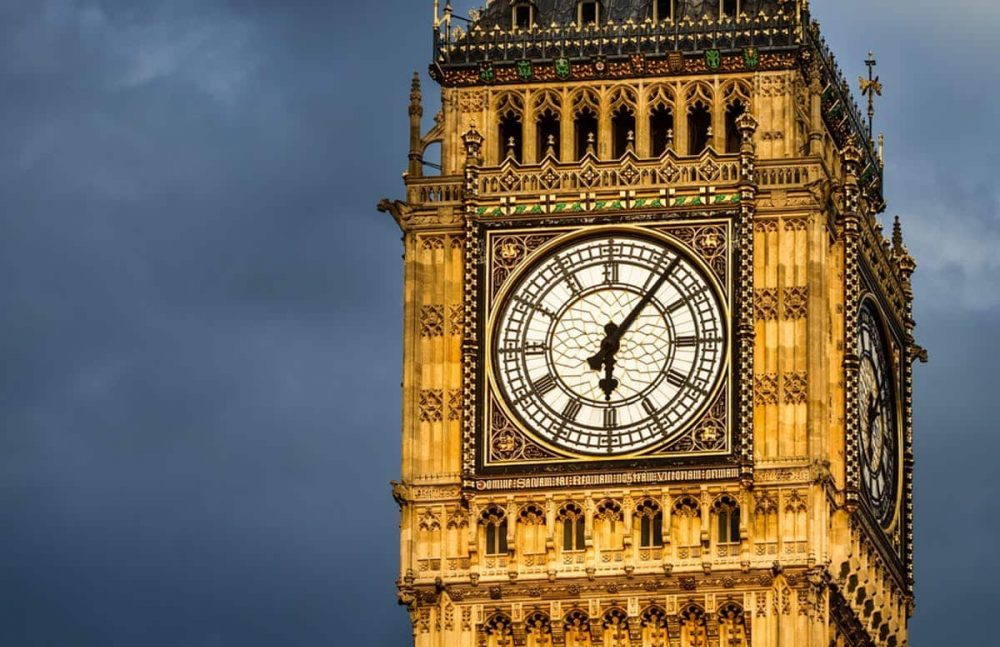
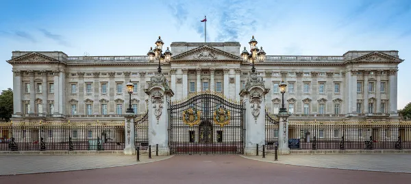
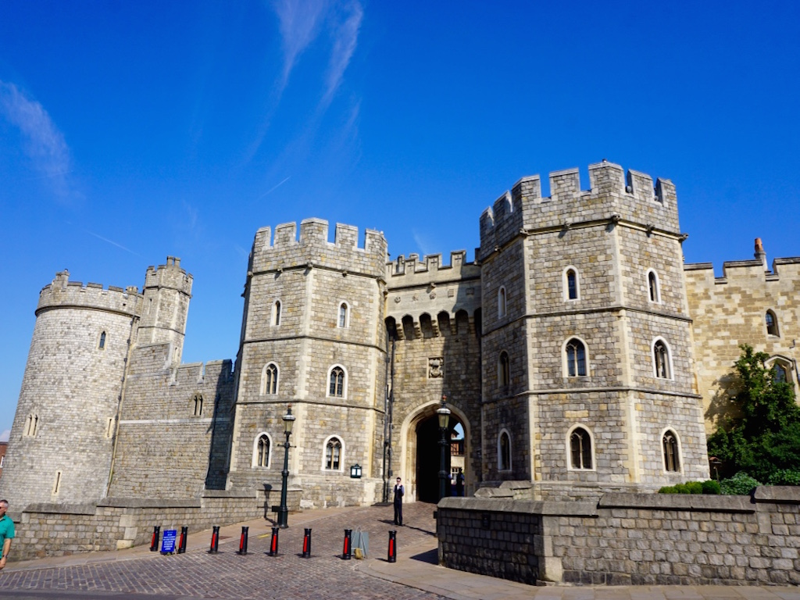
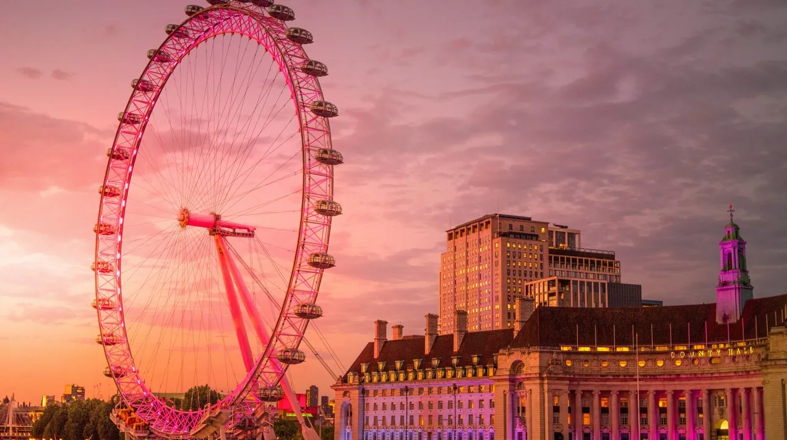
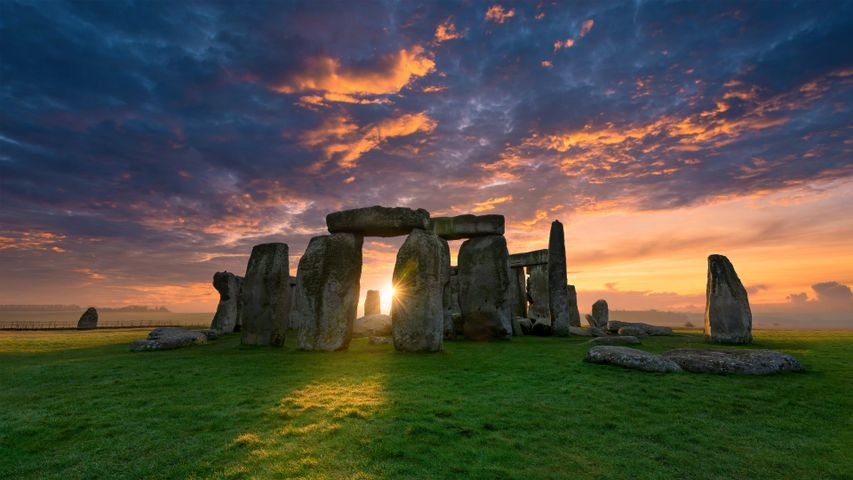

Pontos Turísticos
A Inglaterra é repleta de locais históricos e atrações que encantam visitantes do mundo inteiro. Desde o icônico Big Ben e o Palácio de Buckingham em Londres, até os antigos castelos medievais e parques naturais. Cada ponto turístico oferece uma experiência única que une história, cultura e beleza natural.

O Big Ben é um dos marcos mais famosos do Reino Unido. Localizado no Parlamento, o sino é
símbolo da pontualidade britânica e um ícone de Londres.

Residência oficial da monarquia britânica, o Palácio de Buckingham impressiona pela sua
arquitetura e cerimônias, como a troca da guarda.

Um dos castelos mais antigos ainda em uso, o Castelo de Windsor combina história medieval com
presença real até hoje.

A Tower Bridge é uma ponte basculante vitoriana sobre o Rio Tâmisa. Seu estilo único a torna um
cartão-postal obrigatório em Londres.

A roda-gigante London Eye oferece uma vista panorâmica espetacular da cidade. É uma das atrações
mais visitadas da Europa.

Stonehenge é um dos monumentos pré-históricos mais misteriosos do mundo. Suas pedras gigantes
atraem turistas e estudiosos.